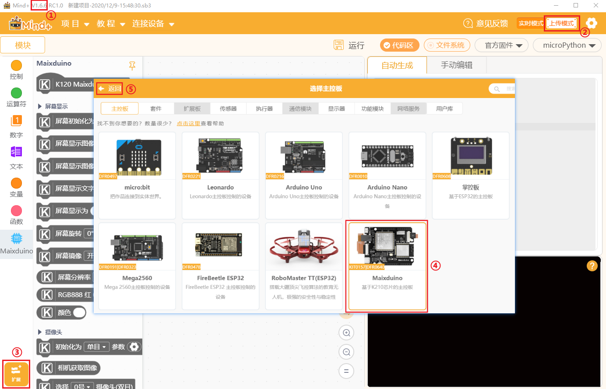
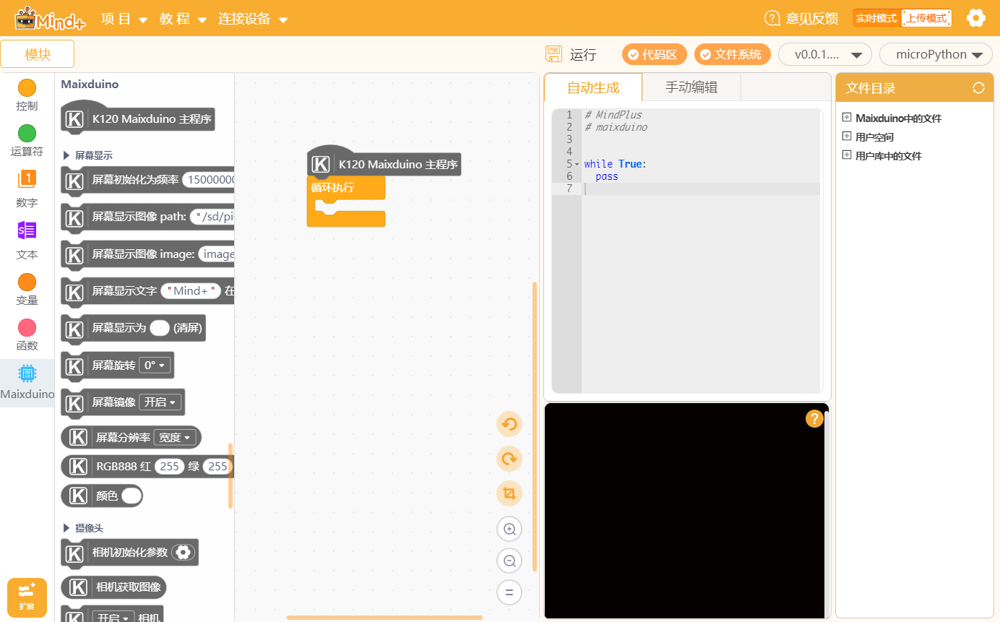
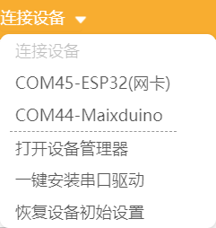
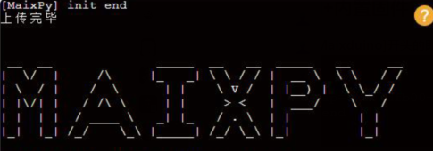
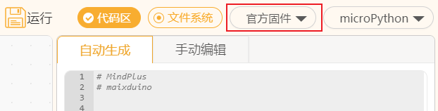
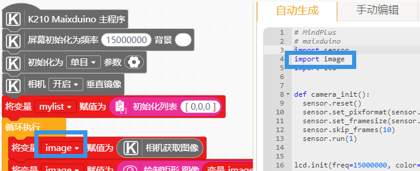
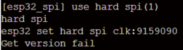

Maixduino K210 如何实现积木编程
2022-08-18
快来体验 Maixduino 不一样的有趣玩法
说明
Mind+ 从1.6.6版本开始支持基于 K210 主控的 Maixduino 开发板，可满足对于 K210 开发有兴趣的用户。

使用流程
器材准备
- Mind+ 1.6.6及以上版本
- Maixduino主控板
- Type-C数据线
环境准备
- 打开 Mind+ 切换至上传模式，扩展库中选择主控板下的 Maixduino 后返回主界面。


- 使用 USB 线连接主控板与电脑，设备菜单中会出现两个 COM 口，选择其中 Maixduino 的 COM 口，软件会自动烧录固件，右下角小黑窗会显示提示语。
| 打开设备管理器 | 打开系统的设备管理器，方便检查端口或驱动问题。 | |
| 一键安装串口驱动 | 如果首次使用软件板子没有出现 COM 口，则可以安装驱动。 | |
| 恢复设备初始设置 | 首次使用 Mind+ 或出现异常情况时，可以使用恢复设备初始设置功能擦除板子内的固件, 使用时需要先选择 COM 口再选择此功能，恢复完成后手动断开连接再选择端口。 |
注意
- 如果是首次使用需要选择 ESP32 (网卡)的 COM 口然后选择恢复设备初始设置功能更新网卡，否则可能会出现模拟输入功能无法使用。
- Mind+ 中的固件与 Maixduino 官方固件不同，可以线选择 Maixduino 的 COM 口然后选择恢复设备初始设置，然后断开再次连接，即可自动刷入 Mind+ 固件。

编程使用
编写一个程序，在屏幕中显示摄像头画面，完成后点击运行，程序即可运行，板子上就可以看到效果了。


手动编辑
手动编辑模式中可以手动编写代码，需要先在文件系统新建文件然后打开，再保存，运行程序需要右键选择运行。

固件说明
Maixduino 有各种版本的固件，Mind+ 图形化部分为保持积木生成代码的稳定，内置的固件包含了图形化需要的库，同时为保持 Maixduino 使用的灵活性，Mind+ 也支持使用其他固件。
如何区分是否为 Mind+ 内置固件？
- 如下图，终端中的输出信息以 Maixduino 开头的即为 Mind+ 内置固件。

2. 如下图，终端中输出信息为 MiaxPy 或者其他则不是 Mind+ 内置固件，则这些固件可能会缺失图形化中的某些功能导致无法使用，如果需要使用图形化的功能请刷入 Mind+ 内置固件。

Mind+ 中固件烧录逻辑说明
选择 Maixduino 的 COM 口之后，软件会检测板子中是否有固件，如果有固件（不论是 Mind+ 内置的固件或第三方均为有固件）则连接终端开始使用，如果没有则自动烧录固件选择区所选择的固件。
因此如果需要烧录第三方固件，操作方法为：
- 选择 Maixduino 的 COM 口，选择恢复设备初始设置（这个功能会擦除板子 flash 固件会被擦除）.
- 在选择固件处点击本地加载，加载想烧录的第三方固件文件，然后点击加载的固件，然后再次选择 Maixduino 的 COM 口，此时因为固件被擦除了就会烧录这个新的固件，等待烧录完成即可。
- 注意：因 Mind+ 积木生成的代码是固定的，因此如果烧录了第三方固件可能会出现部分功能无法使用（例如引脚映射文件在新的固件下没有会出错）此时可以使用手动编辑功能直接使用代码，如果继续想使用图形化，则可以使用开放扩展库自己写图形化积木扩展实现，教程点击.

同理如果要从第三方固件切换为 Mind+ 内置固件，操作方法为：
- 选择 Maixduino 的 COM 口，选择恢复设备初始设置（这个功能会擦除板子 flash，固件会被擦除）。
- 在选择固件处点击官方固件，然后再次选择 Maixduino 的 COM 口，此时因为固件被擦除了就会烧录 Mind+ 内置的官方固件，等待烧录完成即可。

教程
社区用户驴友花雕的系列教程
- 【花雕测评】【AI】Mind+文字图片显示、呼吸灯及网络应用的22项小实验
- 【花雕测评】【AI】Mind+机器视觉之数字图像处理和显示的22种小测试
- 【花雕测评】【AI】Mind+机器视觉之颜色、维码与形状识别的8个小实验
社区用户 hockel 的系别教程
- 【mind+ 玩转MAIXDUINO 系列0】 工欲善其事，必先利其器
- 【Mind+ 玩转Maixduino系列1】你好，世界
- 【mind+ Maixduino用户库】NES 游戏扩展库 【mind+ 用户库】Maixduino 中文字模、图片英文显示
社区用户 DFByaoZQN5E 的系列教程
- [教程]mind+ k210主板第一课 hello word!
- [教程]mind+ k210主板第二课 gpio(1)
- [教程]mind+ k210 第三课 gpio (2)
- [教程]mind+ k210 第四课 gpio (3)
社区用户肥罗-阿勇的教程
社区用户 hmilycheng 的系列教程
- Maixduino轻松学系列 —— （1）初识Maixduino
- Maixduino轻松学系列 —— （2）Mind+带你畅玩经典红白机游戏
- Maixduino轻松学系列 —— （3）基于Mind+的简易NTP网络时钟
- Maixduino轻松学系列 —— （4）基于Mind+的图像识别：人脸检测
- Maixduino轻松学系列 —— （5）有屏幕的地方就有BAD APPLE
- Maixduino轻松学系列 —— （6）基于ASR语音识别控制红绿灯
- Maixduino轻松学系列 —— （7）超声波传感器的认识与使用
注意事项 & FAQ
- 断电重启之后，按一下板子上的 RESET 键即可启动程序。
- 如果是首次使用需要选择 ESP32 (网卡)的 COM 口然后选择恢复设备初始设置功能更新网卡，否则可能会出现模拟输入功能没有读值的情况。
- 涉及到 SD 卡读取或存储的操作，需要插入内存卡（断电后插拔内存卡）才可正常使用。

3. 不支持的硬件可以使用用户库功能自行添加，详情查看官方文档中自定义用户库教程。
4. 人工智能项目需要导入模型文件，请将模型文件拷贝到内存卡目录下。
下载连接 提取码：mind
5. 注意变量名字不要与内置的库名字重复，例如不要命名变量为 image

- FAQ
| 问题 | 解决思路 | |
|---|---|---|
| 在执行有模型的 AI 程序时出现 out of memory 或者 memory not enough 等内存不足的错误怎么办？ | 程序使用的模型对应的固件可能不是 Mind+ 内置的，尝试找到对应的固件或寻找maixpy的固件。 | |
| 报错 kpu: img w=xxx,h=xxx, but model w=xxx,h=xxx kpu: check img format err! 怎么办？ | 使用的 kmodel 模型文件训练的时候的分辨率与程序中使用的摄像头分辨率不同，尝试修改相机设置窗口。 | |
| 提示 no module named 'pin' 错误怎么办？ | 说明固件不是 Mind+ 中的，如果需要使用 Mind+ 内置固件，则选择 Maixduino 的 COM 口,恢复设备初始设置擦除固件，然后断开再次连接即会自动刷入 Mind+ 提供的固件。如果依然要使用非 Mind+ 内置固件，则需要导入对应依赖库，点击查看教程。 | |
| 使用 WiFi 连接功能时提示 hard spi Get version fail hard spi 或卡住怎么办？  |
用到网络功能时需要插上内存卡再使用。 |